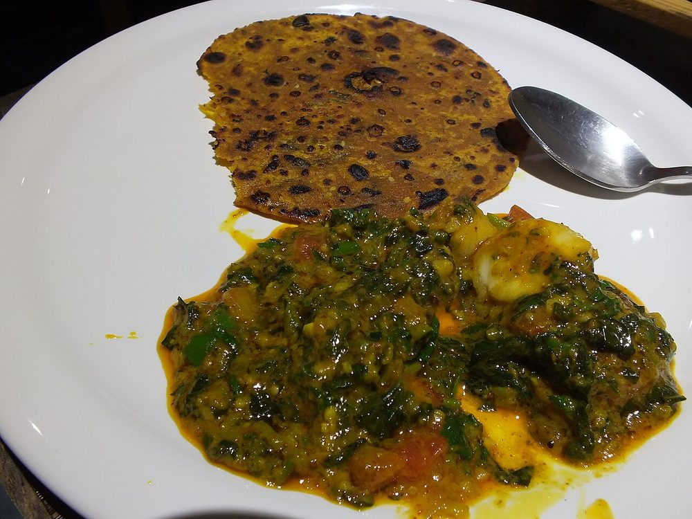

Contains: milk, gluten, sesame
Checked against the ingredient list for ten allergens: milk, egg, fish, crustaceans, tree nuts, peanuts, sesame, mustard, soy and gluten. Brands vary, so read the label on anything new to you.
Ingredients
Quantities for 4.
- 250g (about 2 cups) Atta
- 3 tbsp Besankeeps them soft and adds body
- 100g, leaves picked and finely chopped Methi Leaves
- 4 tbsp Yogurtthe softening agent, do not skip
- 1 tsp, paste Ginger
- 2, minced Green Chilli
- 1/2 tsp Turmeric
- 1 tsp Chilli Powder
- 1 tsp Coriander Powder
- 1/2 tsp, crushed between the palms Ajwain
- 1 tbsp Sesameoptional
- 2 tbsp for the dough, plus more for roasting Neutral Oil
- for smearing, about 3 tbsp Gheeoil if you want them to keep longeroptional
- to taste Salt
- about 60ml, as needed Water
Cookware
stovetop, tawa
Before you start
- Wash the methi and dry it thoroughly on a cloth. Wet leaves make a slack dough that needs extra flour and turns the theplas tough.
- Salt the chopped methi and leave it 10 minutes, then squeeze. It releases water and loses its raw bitterness.
- The dough must rest at least 20 minutes; unrested thepla dough fights the rolling pin and shrinks back.
Method
- Mix the atta, besan, chopped methi, all the spices, sesame and salt in a wide bowl.
- Rub in the 2 tbsp oil until the flour looks like damp sand, then add the yogurt, ginger and chilli.
- Bring it together with water added a spoonful at a time into a soft, pliable dough. Softer than roti dough.Methi keeps releasing water as it sits, so start drier than you think you need.
- Cover and rest the dough 20 minutes.
- Divide into 12 balls and roll each to a thin round about 15cm across, dusting lightly with atta.
- Cook on a hot tawa 40 seconds, until small bubbles rise, then flip.
- Smear ghee on the cooked side, flip again, and press the edges down with a cloth so it puffs and browns in spots.Brown freckles, not a uniform tan. An over-cooked thepla goes brittle and will not roll.
- Stack the cooked theplas in a cloth-lined box so they steam each other soft.
Storage
Keeps 4-5 days in an airtight box at room temperature, a week refrigerated. Eat at room temperature with chundo or plain yogurt; no reheating needed.
Nutrition Good estimate
Medium protein: 16 g a serving, 15% of the calories
| Per serving128 g | Per 100 g | |
|---|---|---|
| Calories | 421 kcal | 330 kcal |
| Protein | 15.5 g | 12 g |
| Carbohydrate | 70.4 g | 55 g |
| of which sugars | 2.8 g | 2 g |
| Fibre | 16.5 g | 13 g |
| Fat | 12.2 g | 10 g |
| of which saturated | 1.9 g | 2 g |
| of which unsaturated | 8.4 g | 7 g |
Ingredients given to taste count as zero, so the real figures run a little higher. Nearest database match used for methi leaves. Estimated from raw ingredients using USDA FoodData Central.
Times, yields, allergens and nutrition are guidance. Use your own judgement on doneness and on storing. More in About.